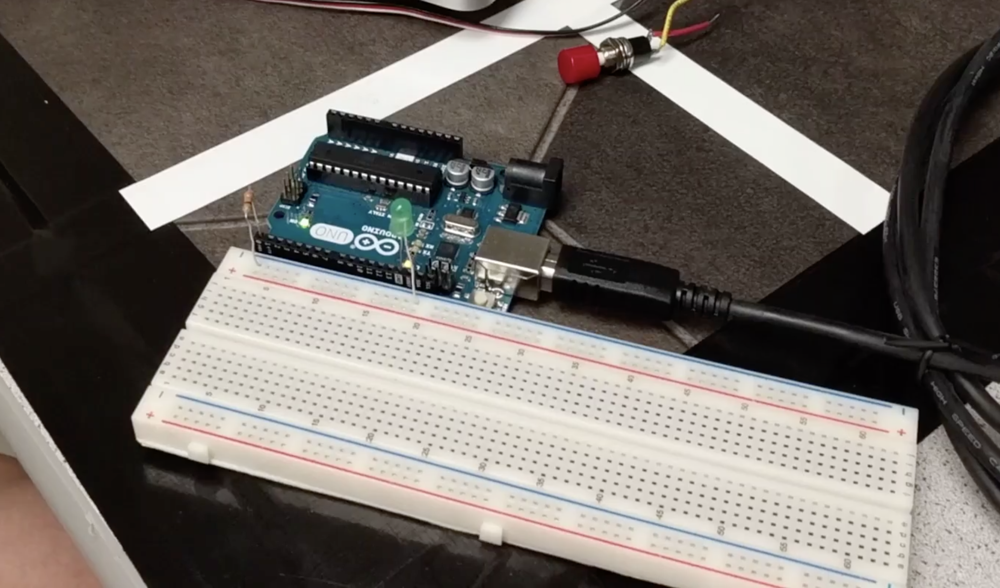
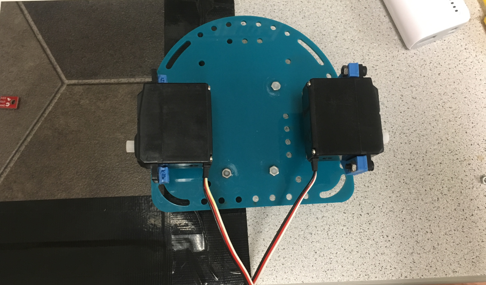
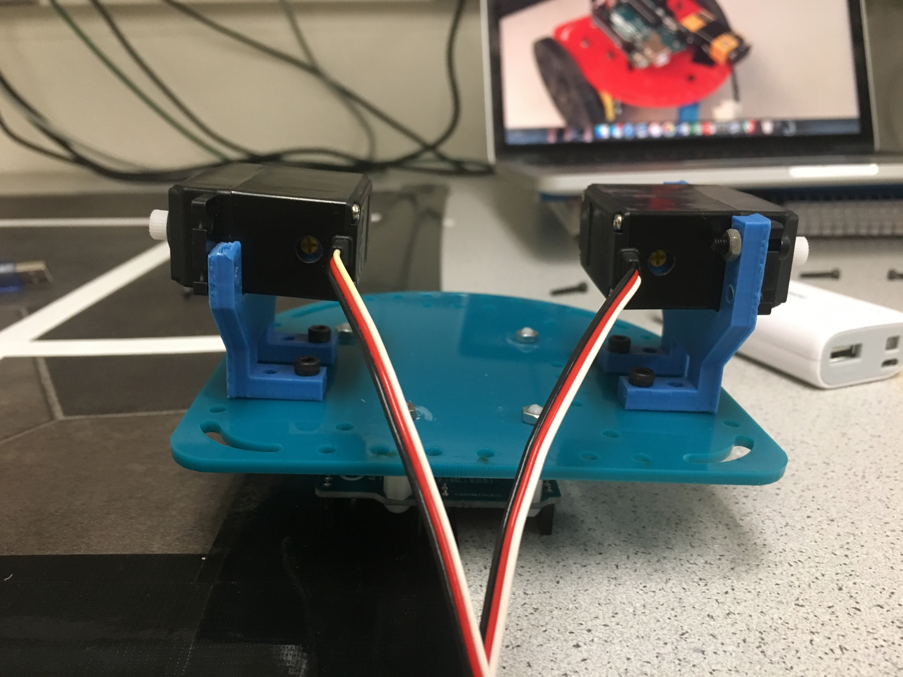
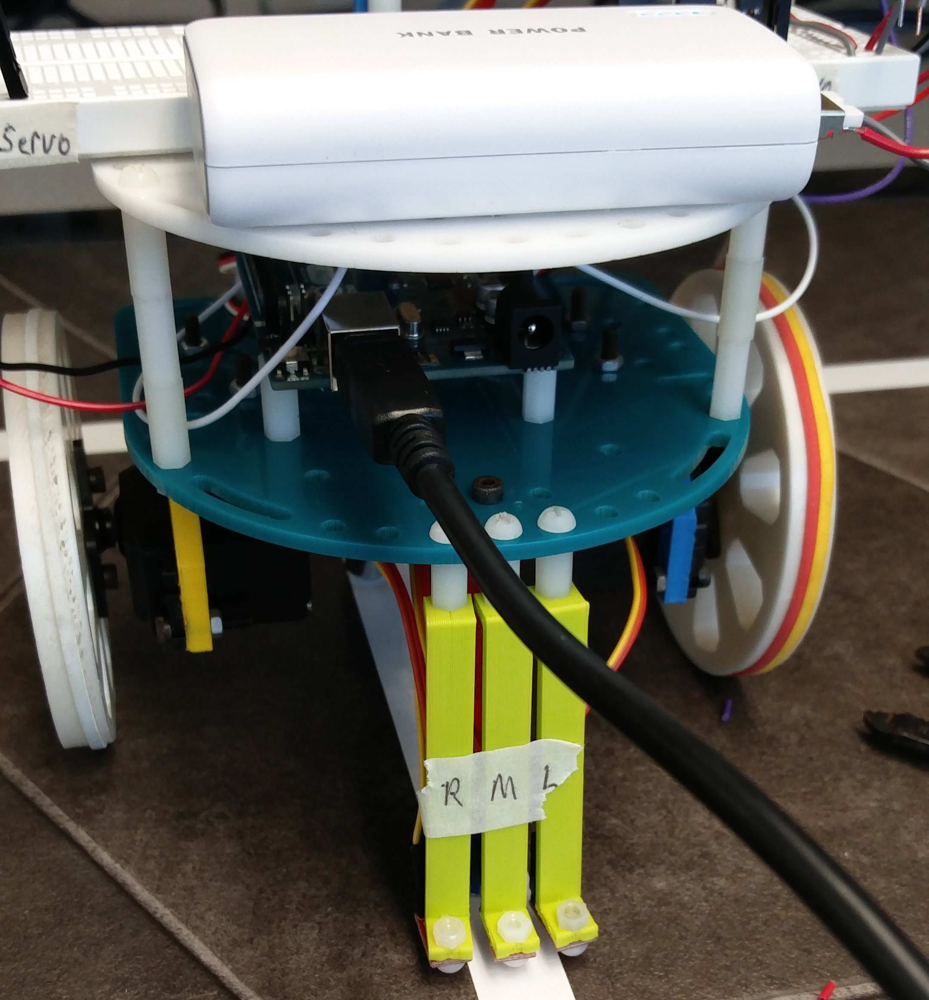
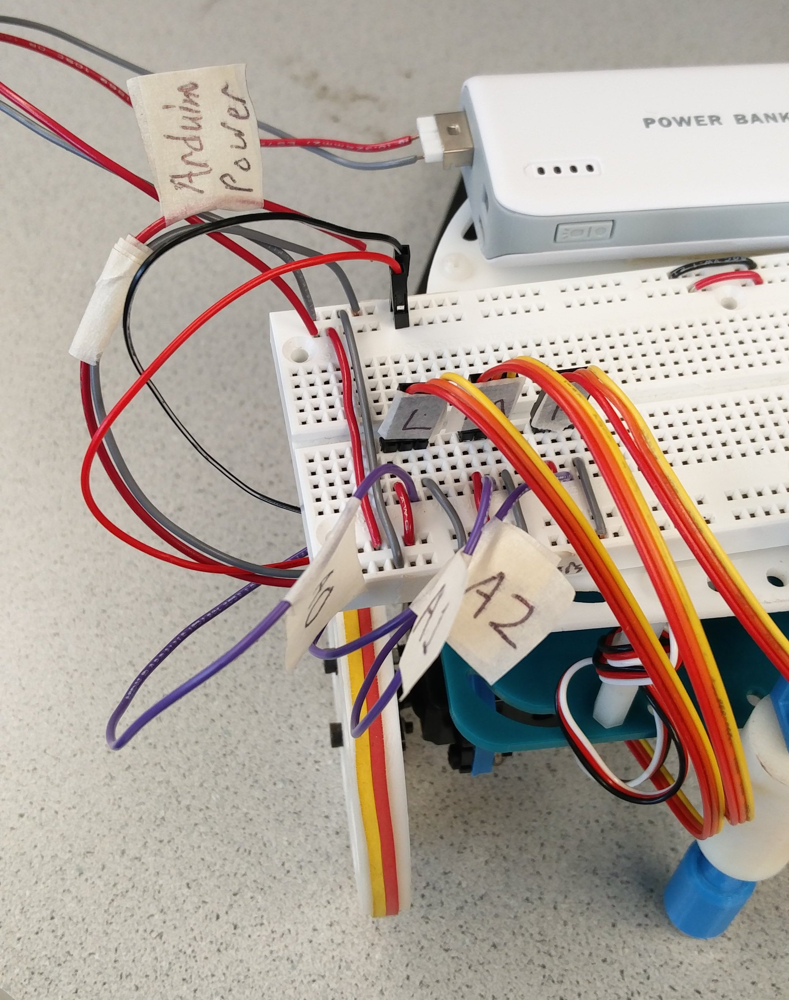
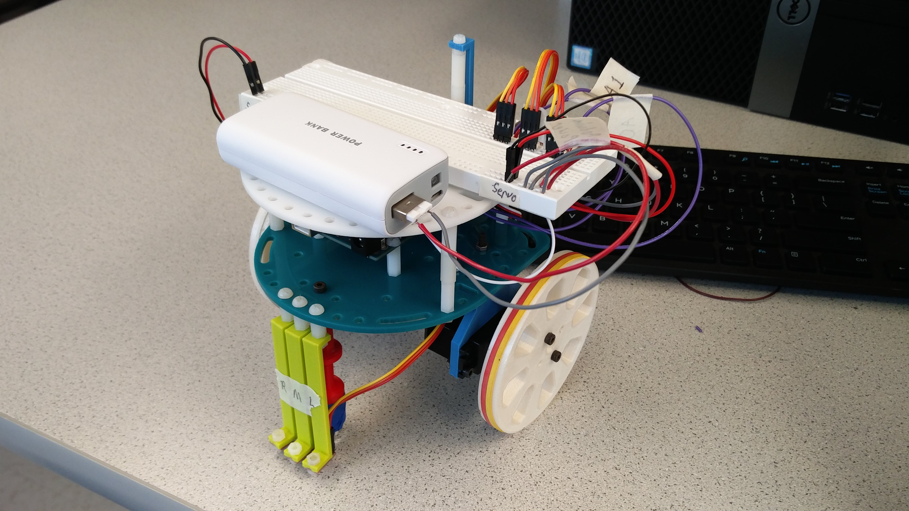

Learn basic functionalities of the Arduino Uno, the Arduino IDE, and
the GitHub repository. In particular, focus on writing a program to
control multiple external components connected to the Arduino Uno. At
the end of the lab, put together a robot and have it perform a simple
autonomous task.
This example can be found under: File > Examples > 1.Basics > Blink
An Arduino program is known as a “sketch”
In the IDE, click checkmark to compile the code
In the IDE, click right-pointing arrow to upload (program) the Uno
If the LED does not blink, check under Tools > Serial Port list to make sure that the Uno is connected to the correct COM port
All Arduino sketches require two functions:
void setup() {}
Called at the start of the entire program
Used to initialize variables and setup I/O pins
Only executes once
void loop() {}
Contains the main body of your program
Loops forever
Our example sketch code:
void setup(){
// initialize digital pin LED_BUILTIN as an output.
pinMode(LED_BUILTIN, OUTPUT);
}
Instructs the Uno that the built-in LED should act as an output
This allows us to write voltage values to turn the LED on and off
// the loop function runs over and over again forever
void loop() {
digitalWrite(LED_BUILTIN, HIGH); // turn the LED on (HIGH is the voltage level)
delay(1000); // wait for a second
digitalWrite(LED_BUILTIN, LOW); // turn the LED off by making the voltage LOW
delay(1000); // wait for a second
}
HIGH and LOW are global variables defined by Arduino, which correspond to logical high (on) and logical low (off)
Since the LED_BUILTIN pin was set as an output, we can write these logical values to it
The program delays for 1 second in between each high / low write (time units are in ms → 1000 ms = 1 second)
Part 2 — Modify the Blink Sketch
GOAL: modify the Blink sketch to control an external LED
The code is identical to that of the Blink example, except for the pin number that the I/O functions use
Replace “LED_BUILTIN” with the pin number that the LED is connected to
Use the LED with every digital pin to test that they all work
As a safety measure, connect the LED in series with a 300 Ohm resistor.
In the event of a complete short out, this limits the output current to
I = V/R = (3.3V/300Ω) = 0.011 A.
Below we show the LED blinking while connected to digital pin 0
void setup() {
pinMode(0, OUTPUT);
}
void loop() {
digitalWrite(0, HIGH); // turn the LED on (HIGH is the voltage level)
delay(1000); // wait for a second
digitalWrite(0, LOW); // turn the LED off by making the voltage LOW
delay(1000); // wait for a second
}

Green LED connected to digital pin 0
Part 3 — The Serial Monitor and the Analog Pins
GOAL: read an analog value and verify it is correct via serial monitor
Connect a potentiometer in parallel with a resistor
This resulting output is connected in series with a 300 Ohm resistor to one of the Uno's analog pins
The voltage values read by the analog pin are printed over the USB cable and displayed in the IDE’s serial monitor
int readValue = 0;
int pinName = A0;
Two variables are declared:
readValue = the value that is output by the ADC
pinName = the analog pin number that the potentiometer is connected to
void setup() {
Serial.begin(9600); }
In setup(), Serial.begin(9600) initializes the serial connection between the Arduino and the computer it is connected to
The baud rate is specified to be 9600
Any COM port or serial monitor on the PC side must use the same baud rate in order to correctly transfer data
Arduino pins with PWM capability are denoted with a tilde (~) symbol
To demonstrate this PWM capability, use a potentiometer to vary the brightness of an LED
The potentiometer provides an analog input to the Arduino
Function = analogRead()
Range = (0, 1023)
A PWM-capable digital output pin controls the LED brightness
analogWrite()
Range = (0, 255)
To handle the range mismatch between analogRead() and analogWrite(),
we divided the read values by four (seen in last line).
int analogInput = A0;
int digitalPin = 11;
int voltageValue = 0;
int delayTime = 500; //half a second
void setup() {
Serial.begin(9600);
pinMode(digitalPin, OUTPUT);
}
void loop() {
voltageValue = analogRead(analogInput);
Serial.println(voltageValue); //Prints to serial monitor, used for debugging purposes
delay(delayTime);
analogWrite(digitalPin, voltageValue/4);
}
Demo:
Part 5 — Parallax Servos
GOAL: use a potentiometer to control the brightness of an LED
We connect Parallax continuous rotation servos to the Arduino and set it to run at varying speeds.
In order to use servos, the Servo library needs to be included in the sketch. This is done with a #include statement at the top.
A Servo object needs to be declared for each servo that is used. In the example below, “myservo” is the name of the servo that is connected to the Arduino.
In setup(), myservo.attach(3) connects the servo to pin digital pin number 3. This a PWM capable pin, since servos need a PWM signal to operate.
In loop(), the last statement, myservo.write(val), writes an integer value ranging from 0 to 180 to set the servo speed. This correlates with the PWM duty cycle that is outputted from the pin. A value of 0 rotates full speed in one direction, and 180 is full speed in the other direction. A value of 90 means the servo will not turn in either direction.
The two statements above myservo.write() read analog voltage from the pin the potentiometer is connected to and set the servo to a speed corresponding to that voltage value. The map(readValue, 0, 670, 0, 180) function takes in the readValue input, which ranges from 0 to 670, and scales it to an integer value between 0 and 180, which is returned. This allows the potentiometer to control the servo movement.
#include
int val = 90;
int readValue = 0;
int pinName = A0;
Servo myservo;
void setup() {
myservo.attach(3);
}
void loop() {
readValue = analogRead(pinName);
val = map(readValue, 0, 670, 0, 180);
myservo.write(val);
}
Demo:
Part 6 — Assembling and Running Our Robot
GOAL: assemble the robot and make it perform a short autonomous task
This week we also assembled our robot and implemented basic autonomous movement
We built our robot using the 3D-printed and laser-etched parts sitting in the lab room, including:
1 robot base (the large aqua platform in the image)
The construction of the robot was tedious and time-consuming
We modeled our prototype off of last year’s designs
(found on their websites)
See the images below for a detailed overview of the design





For our code, we wrote a header file with the following movement commands:
// Stops the robot
void stopMotors(Servo servo_L, Servo servo_R);
// Drives the robot forward
void moveForward(Servo servo_L, Servo servo_R);
// Drives the robot backward
void moveBackward(Servo servo_L, Servo servo_R);
// Turns the robot right slightly, based on [amount]
void adjustRight(Servo servo_L, Servo servo_R, int amount);
// Turns the robot left slightly, based on [amount]
void adjustLeft(Servo servo_L, Servo servo_R, int amount);
// Turns the robot 90 degrees right, in place
void turnRight(Servo servo_L, Servo servo_R);
// Turns the robot 90 degrees left, in place
void turnLeft(Servo servo_L, Servo servo_R);
By running these commands sequentially with delays, we can program
our robot to move around in arbitrary patterns. We used these functions
to move our robot around a square in the video.